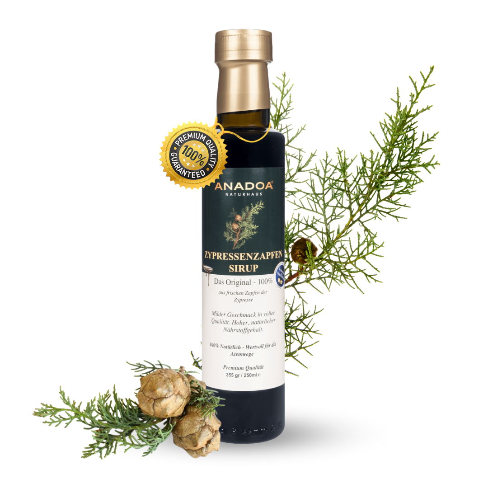

Was ist Zypressenzapfen-Sirup?
Zypressenzapfen-Sirup – im türkischen Volksmund oft als „Koşum Kozalağı Şurubu“ bezeichnet – wird aus den noch grünen, unreifen Zapfen der Mittelmeerzypresse (Cupressus sempervirens) hergestellt. Diese immergrune Baumart ist das Wahrzeichen der anatolischen Landschaft und ein Symbol für Langlebigkeit und Beständigkeit in der türkischen Kultur.
Unser Produkt trägt den Namen „Tannenzapfen-Sirup“, enthält jedoch als Wirkstoff die Zapfen der Zypresse – nicht der Tanne oder Fichte. Dies ist eine im deutschen Sprachraum weit verbreitete Bezeichnungspraxis, da echte Tannenzapfensirupe aus dem Alpenraum bekannt sind. Botanisch handelt es sich um ein vollständig anderes Produkt mit einem deutlich anderen Wirkstoffprofil.
Die Zypresse und ihre Zapfen: Ein Baum, zwei Heilmittel
Die Mittelmeerzypresse (Cupressus sempervirens) wächst in den Mittelmeerregionen, besonders in der Türkei, Griechenland, dem Libanon und im Iran. Ihre Zapfen – kleine, kugelförmige Holzstrukruen von 2-4 cm Durchmesser – enthalten eine außergewöhnlich hohe Konzentration an ätherischen Ölen, Terpenen (besonders α-Pinen und Camphen) und Flavonoiden.
Für die Sirupherstellung werden ausschließlich die noch grünen, unreifen Zapfen verwendet, die im Frühjahr geerntet werden. Zu diesem Zeitpunkt ist der Gehalt an ätherischen Ölen und Bioaktivstoffen am höchsten. Ausgereifte, braune Zapfen haben deutlich weniger Wirkstoffgehalt.
Wirkstoffe & Inhaltsstoffe
- α-Pinen & β-Pinen: Monoterpene mit balsamischer Note. Klassische Bestandteile von Nadelholzextrakten mit expektorierender (schleimlösender) Wirkung in der Volksmedizin.
- Camphen: Ein Terpen mit typischem Kampfernoten-Geruch, das traditionell bei Atemwegsbeschwerden eingesetzt wird.
- Flavonoide: Quercetin und ähnliche Verbindungen mit antioxidativer Aktivität.
- ätherische Öle: Natuerliche atherische Oele aus den Zapfen verleihen dem Sirup seinen charakteristischen, waldigen Duft und Geschmack.
- Tannine: Gerbstoffe, die traditionell als zusammenziehend und beruhigend auf Schleimhäute gelten.
Hinweis: Zypressenzapfen-Sirup ist ein traditionelles Lebensmittel, kein Arzneimittel. Die genannten Inhaltsstoffe ersetzen keine medizinische Behandlung.
Traditionelle Herstellung
Die Zapfen werden im Frühjahr von Hand geerntet und schonend verarbeitet. Im traditionellen Verfahren werden die zerkleinerten Zapfen mit Wasser aufgekocht, der Extrakt gefiltert und anschließend mit Honig und Maulbeersirup zu einem aromatischen Sirup eingedickt. Ohne Konservierungsstoffe, ohne Farbstoffe, ohne künstliche Aromen.
Anwendung
- Pur: 1-2 Teelöffel täglich, langsam schlucken für die Schleimhautberuhigung.
- In warmem Tee: In Thymian- oder Ingwertee einrühren.
- Als Kur: 2-4 Wochen vor und während der Erkaltungssaison.
- Für die Familie: Geeignet für Erwachsene und Kinder ab 2 Jahren.
Häufig gestellte Fragen
Warum heißt das Produkt „Tannenzapfen-Sirup“, wenn es Zypressenzapfen enthält?
Die Bezeichnung „Tannenzapfen-Sirup“ ist im deutschen Sprachraum als Oberbegriff für Zapfensirupe geläufig. Unser Produkt basiert auf echten Zypressenzapfen (Cupressus sempervirens) aus anatolischem Anbau – botanisch und währstofftechnisch von Tannensirups aus den Alpen verschieden.
Ist Zypressenzapfen-Sirup für Kinder geeignet?
Ja, der Sirup ist für Kinder ab 2 Jahren geeignet. Für Kinder haben wir auch eine speziell ausgerichtete Kinder-Variante: die Zypressenzapfen-Paste für Kinder.
Wie lange hält sich der Sirup?
Ungeöffnet mind. 2 Jahre bei kühler, dunkler Lagerung. Nach dem Öffnen im Kühlschrank aufbewahren und innerhalb von 6 Monaten verbrauchen.
Anadoa Naturhaus
Natur pur. Höchste Qualität direkt aus Anatolien.